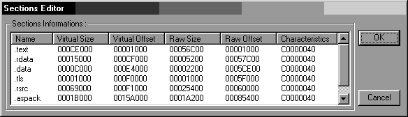
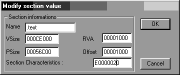
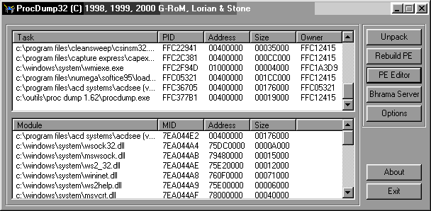
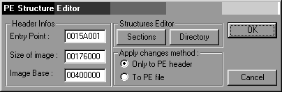

ASDSEE version 3.0 Modèle 103 FR
En voulant désassembler ce soft, Wdasm ne va pas reconnaître, dans le PE Header, la signature d'un
exécutable valable, et le Symbol Loader de SoftIce va lancer l'application sans s'arrêter sur la
case départ...
Un petit tour par ProcDump s'impose, pour jeter un coup d'œil sur les caractéristiques des sections :

Vous aurez sans doute deviné que le packer d'ACDSEE est ASPack...
Et vous aurez probablement remarqué que dans cet exemple, toutes les sections ont C0000040
comme caractéristique (c'est une constante, car il faut que la section soit Readable,
Writeable et Data). Ainsi, le programme peut lire le code compressé,
et le décompresser dans la même section sans provoquer d'erreur fatale dans Windows), ce qui, normalement,
vous empêche de désassembler l'exécutable, ou d'obtenir un break en passant par le Symbol Loader
de SoftIce.
En modifiant la première section (.text), et en remplaçant C0000040 par E0000020
à l'aide de ProcDump, vous pourrez reprendre la main avec SoftIce, et obtenir un listing, sans les ressources
(Strings Data...) dans Wdasm.
Petit rappel sur les attributs des sections :
0x20...... : signifie eXecutable
0x40...... : signifie Readable
0x60...... : signifie eXecutable + Readable
0x80...... : signifie Writeable
0xC0...... : signifie Readable + Writeable
0xE0...... : signifie Readable + Writeable + eXecutable
0x......20 : signifie contains Code
0x......40 : signifie Initialized data
0x......80 : signifie Unitialized data
Un attribut égal à E000020 va préciser au programme qu'il contient du code eXecutable, Readable
et Writeable. Le " Toutes Options " Koa !
Voici comment vous y prendre pour modifier les caractéristiques des sections:
Dans ProcDump, en cliquant sur le bouton PE EDITOR, vous allez obtenir des informations sur le Soft compressé
:
L'image Base qui semble toujours être 400000 et la valeur de l'Entry point.
En cliquant sur le bouton " Sections ", vous obtiendrez l'écran suivant :

Pour rappel : tout programme est divisé en sections, et chaque section possède une entrée dans le PE Header, ce qui veut dire que le loader possède lui aussi une section dans le PE Header. ProcDump va nous permettre de connaître les détails de celle ci ( celle contenant l'Entry Point):
Name Virtual Size Virtual Offset Raw Size Raw Offset .aspack 0001B000 0015A000 0001A200 00085400
La Virtual size de la section est 1B000, ce qui veut dire que la mémoire
qui sera allouée pour cette section sera de 1B000 bytes. Le Virtual Offset de la section, et donc du code
appartenant au loader, est de 0015A000, additionné à l'Image base qui
vaut 00400000, ce qui nous donne une adresse virtuelle de 0055A000.
Une fois modifié les caractéristiques de la première section (.text), le Symbol loader de
softIce va nous faire breaker sur l'EntryPoint de notre cible :
Entry Point
:0055A001 PUSHAD ; sauve les registres sur la pile :0055A002 CALL 0055A577 ; va récupérer la valeur de EBP :0055A007 JMP 0055A055 ; et continue... :0055A009 ADD [EAX],AL
Récupération de l'adresse en cours
:0055A577 MOV EBP,[ESP] ; récupère l'adresse de retour du call :0055A57A SUB EBP,004439AB ; la soustrait à l'adresse d'ASPack :0055A580 RET
Quelques explications :
ASPack provoque un call. Le processeur va placer l'adresse de retour sur la pile et dans ESP. Le Mov EBP,[ESP]
va récupérer cette adresse dans EBP.
Lors de la compilation d'ASPack, le programme s'est vu attribué une adresse d'origine (004439AB ).
Un sub EBP,004439AB, ou EBP contient l'EIP de retour, va placer la différence entre les offsets de la compilation
d'origine et ceux de la nouvelle implantation au sein d'un programme hôte. Ainsi, un LEA EAX,[EBP+00443B72]
va "corriger" la différence entre l'adresse où se trouvaient les adresses visées
par ASPack dans sa version d'origine (00443B72) et celle ou elles se trouveront après avoir packé
une cible (différence contenue dans EBP + adresse d'origine). Dans le cas d'ACDSee, EBP vaut 11665Ch.
ASPack décompresse les applications en plusieurs passes. Voici un exemple de passage de relais entre la
première passe de décompression et la suivante :
1er passage de relais
:0055A0AC MOV [EBP+004439E5],EAX ; sauvegarde l'adresse contenue dans EAX :0055A0B2 LEA EAX,[EBP+00443B72] ; récupère l'adresse de destination :0055A0B8 JMP EAX ; saute à cette adresse :0055A0BA ADD [EAX],AL ; octets NULL
Mais le passage de relais à trouver est celui ci :
:0055A4DB MOV EAX,[EBP+00443A76] :0055A4E1 PUSH EAX :0055A4E2 ADD EAX,[EBP+00444804] :0055A4E8 POP ECX :0055A4E9 OR ECX,ECX :0055A4EB MOV [EBP+00443EA1],EAX :0055A4F1 POPAD :0055A4F2 JNZ 0055A4FC :0055A4F4 MOV EAX,00000001 :0055A4F9 RET 000C :0055A4F9 RET 000C :0055A4FC PUSH 00000000 :0055A501 RET
Il est facile à trouver. Pour y arriver, il suffit, juste après que le programme ait marqué
un break sur l'Entry Point, de rechercher un POPAD, suivie d'un ou plusieurs RET, en utilisant l'ascenseur de
la fenêtre des codes.
Commentons un peu ces lignes :
:0055A4DB MOV EAX,[EBP+00443A76] ; charge 0A2AAF dans EAX
Le MOV EAX,[EBP+00443A76] va récupérer une partie de l'adresse (0A2AAF) de l'Entry Point du programme d'origine. Cette adresse est stockée en clair dans les codes d'ACDSee en :
.00510C60: BE 16 65 0F-04 0E E1 FD-24 CF 8B FA-26 AF 2A 0A .00510C70: AD 9F B0 FE-B6 F9 E6 2B-27 29 D3 70-0A E7 6F B4
et en ([11665C+00443A76] = 0055A0D0) :
.0055A0D0: 0E 00 AF 2A-0A 00 00 00-00 00 00 00-00 00 00 10 .0055A0E0: 00 00 00 E0-0C 00 00 F0-0C 00 00 50-01 00 00 00
La première adresse de stockage est utilisée par l'application en :
:0055A879 MOV DL,[ECX] ; prend un bit de l'@ 510C6D :0055A87B INC ECX ; passe au bit suivant :0055A87C MOV [ESP+0C],DL ; stock le bit dans ESP+0C
Probablement à des fins de contrôles à ce qui m'a semblé, et la seconde adresse juste avant le passage final du relais. Ces bouts d'adresses se trouveront toujours placé aux mêmes endroits, quelques soit le programme compressé par cette version d'ASPack.
:0055A4E1 PUSH EAX ; pousse 0A2AAF :0055A4E2 ADD EAX,[EBP+00444804] ; ajoute ImageBase stockée en EBP+00444804 :0055A4E8 POP ECX ; récupère 0A2AAF dans ECX :0055A4E9 OR ECX,ECX ; vérifie qu'ECX n'est pas NULL :0055A4EB MOV [EBP+00443EA1],EAX ; PATCH le programme :0055A4F1 POPAD ; restitue les registres :0055A4F2 JNZ 0055A4FC ; va vers Entry Point2 si ECX non NULL :0055A4F4 MOV EAX,00000001 ; EAX = 1 (Flag) :0055A4F9 RET 000C ; retourne à ASPack :0055A4F9 RET 000C :0055A4FC PUSH 00000000 ; Adresse du PATCH ASPack :0055A501 RET ; Goto Entry Point d'ACDSee
Le contenu de ces adresses est visible par un U CS:55A4DB dès le break sur l'Entry Point, le loader ASPack
d'ACDSee n'étant pas, lui même, compressé comme ce sera le cas dans d'autres versions.
En posant un BPX 0055A4F1, vous verrez les effets du patch qu'ASPack s'inflige :
:0055A4F1 POPAD :0055A4F2 JMP 0055BFBF :0055A4F7 ADD [EAX],AL :0055A4F9 RET 000C :0055A4FC PUSH 004A2AAF ; Entry Point du programme cible :0055A501 RET
Dumper le programme en mémoire:
Lancez le programme/cible via le Symbol Loader de Softice . De cette façon SoftIce pourra prendre la main.
Posez un bpx sur le second RET (en 0055A501) et faites [F5] pour relancer le programme. Au break, passez en mode
assemblage, et changez le RET par un JMP EIP. Ainsi, vous obligerez le programme à boucler sur lui-même.
Rouvrez ProcDump, et cliquez sur " Options " pour choisir " Rebuilt
Import Table ", puis sélectionnez l'application dans la liste des taches actives de la fenêtre
de ProcDump. Après quelques instants, vous pourrez sauver un joli dump du nouvel exécutable prêt
a être patché si l'envie vous en prend, avec du beau code tout clean.

Rendre le fichier obtenu exécutable:
Le zoli exécutable obtenu ne va pas pour autant fonctionner. Il faut encore lui indiquer quel va être
son nouvel Entry Point. C'est encore ProcDump qui va nous permettre de réaliser facilement cette modification.
Ouvrez ProcDump, et choisissez "PE EDITOR"

L'Entry Point dont vous aurez relevé l'adresse dans SoftIce (le contenu de EAX, soit 0A2AAF) va venir
remplacer le précèdent Entry Point (15A001).
Relancez le programme...
Ca marche !
Tout ceci n'aura pris que quelques minutes...
Passons à la suite.
Désassemblez le Dump obtenu, vous obtiendrez les String Data Reférences.
Je me suis intéressé à celles qui me paraissaient les plus représentatives d'une version
Shareware :
"Version d'évaluation" ; deux adresses "Votre période d'essai est terminée" ; une adresse
En regardant à ces trois adresses, un call/test/jump a tout de suite attiré mon attention :
:00414EEO mov ecx, 004E9F98 :00414EE5 call 00498A90 :00414EEA test eax, eax :00414EEC jne 00414F17 :00414EEE lea ecx, dword ptr [esp+00000114] :00414EF5 push 00000050 :00414EF7 push ecx :00414EF8 call dword ptr [004CF29C] :00414EFE lea edx, dword ptr [esp+eax+00000118] :00414F05 mov eax, dword ptr [004E9FD0] :00414FOA push edx * Possible Reference to String Resource ID=00195: "Version d'évaluation" I :00414FOB push 000000C3 |
la seconde String Data "Version d'évaluation" est le coupé/collé de la première :
:00429CEB call 00498A90 :00429CF0 test eax, eax :00429CF2 jne 00429D14 :00429CF4 lea eax, dword ptr [esp+08] :00429CF8 push 00000050 :00429CFA push eax :00429CFB call esi :00429CFD mov edx, dword ptr [004E9FD0] :00429D03 lea ecx, dword ptr [esp+eax+0C] :00429D07 push ecx * Possible Reference to String Resource ID=00195: "Version d'évaluation" I :00429D08 push 000000C3 |
pour la troisième adresse, il ne faut pas hésiter à remonter un peu dans le Dead Listing :
:0043CEF5 call 00498A90 :0043CEFA test eax, eax :0043CEFC jne 0043CFBF :0043CF02 push ebp :0043CF03 mov ecx, 004E9F98 :0043CF08 call 004991AO :0043CFOD mov ebp, dword ptr [004CF664] :0043CF13 mov edi, eax :0043CF15 test edi, edi :0043CF17 jg 0043CF3A :0043CF19 mov edx, dword ptr [004E9FD0] :0043CF1F lea ecx, dword ptr [esp+00000098] * Possible Reference to String Resource ID=00150: "&Arrêter" I :0043CF26 push 00000096 :0043CF2B push ecx * Possible Reference : "Votre période d'essai est terminée" I :0043CF2C push 00000253 |
Allons jeter un coup d'œil à ce call :
* Referenced by a CALL at Addresses: |:00401C11 , :00407C33 , :00407E54 , :00414EE5 , :0041FD24 |:00420E09 , :00429CEB , :0043CD85 , :0043CEF5 , :00497884 |:00497C1A I :00498A90 xor eax, eax :00498A92 ret
En regardant à quoi pouvaient bien mener ces 11 adresses, j'ai pu constater que ce call était
systématiquement lié à de méchantes choses sharewares...
Mieux! A la sortie de ce call, le test qui le suivait était toujours du type JNE (Jump if Not Equal). Il
suffit donc qu'EAX soit égal à autre chose que 00 pour que le bug soit corrigé ?
En vérifiant avec SoftIce, j'ai pu observer qu'EAX pouvait avoir des valeurs très variables, mais
qu'en empêchant la mise à zéro de ce registre, le programme fonctionnait très bien.
Il suffit alors de remplacer le XOR EAX,EAX par un NOP INC EAX, ou un NOP DEC EAX, voir par deux NOP...
Patcher le programme compressé :
Pour rajouter le code à la fin du code du programme compressé, vous devrez trouver une place disponible
qui ne sera pas utilisée par ASPack lors de la décompression du programme d'origine.
Dans la mesure ou il y a toujours un peu de Padding à la fin de chaque section (des 0000 qui viennent compléter
la taille de celle ci pour s'aligner sur un multiple du CODE), c'est en partant de la fin de la section dans laquelle
on envisage de placer notre patch qu'il va falloir trouver une petite place pour se glisser :
Dernière section :
Name Virtual Size Virtual Offset Raw Size Raw Offset .rsrc 0001000 00175000 00000000 0009F600
le virtual offset de la dernière section est 00175000, ce qui veut dire que la fin de la section .aspack
se trouvera juste avant 0055A000 + 00175000 = 00575000
En partant de l'adresse trouvée, il suffit de remonter jusqu'à trouver des bytes sur lesquels il
sera possible d'écrire (ce qui n'est en général pas le cas des INVALID, à moins de
modifier les caractéristiques de la section, combiné avec l'utilisation d'un hexEditeur).
:0055BFF7 0000 ADD [EAX],AL :0055BFF9 0000 ADD [EAX],AL :0055BFFB 0000 ADD [EAX],AL :0055BFFD 0000 ADD [EAX],AL :0055BFFF 00FF ADD BH,BH :0055C001 FFFF INVALID :0055C003 FFFF INVALID :0055C005 FFFF INVALID :0055C007 FFFF INVALID
Le patch que j'envisage de créer aura une taille de 15d octets. Il serait donc possible de s'installer
en 0055BFF0. Par sécurité, et après avoir testé à l'aide d'un BPR 0055BFBF 0055BFFF
RW que la place à squatter ne sera pas utilisée, je vais m'installer en 0055BFBF.
Patch
:0055BFBF 66C705908A49009048 MOV WORD PTR [00498A90],4890 :0055BFC8 68AF2A4A00 PUSH 004A2AAF :0055BFCD C3 RET :0055BFCE 000A ADD [EDX],CL
Dans la mesure ou le loader n'est pas compressé, cette seule modification va suffire à détourner la protection et corriger le bug dont le programme était affligé.
Dernière petite chose, si vous souhaitez modifier les information apparaisant dans la boite ABOUT, vous
pouvez aller dans la base de registre en:
[HKEY_LOCAL_MACHINE\Software\ACD Systems\ACDSeeF]
Et bidouiller à votre guise...